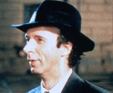

You can lose all your points for any one of three things. One: If you cry. Two: If you ask to see your mother. Three: If you're hungry and ask for a snack! Forget it!Don't hate your enemy, or you will make wrong judgment.This is my story, this is my father's sacrifice, this is my father give grace.
La vita
è bella
This is a simple story…but not an easy one to tell.
360
3.2
css
csscsscsscss
Guido: Oh, that. “Not Allowed” signs are the latest trend! The other day, I was in a shop with my friend the kangaroo, but their sign said, “No Kangaroos Allowed,” and I said to my friend, “Well, what can I do? They don't allow kangaroos.”Guido: Good. I don't like vampires. Tomorrow, we'll get sign: “No Spiders or Vampires Allowed.”
Guido Orefice- - - - - - - 
Dora- - - - - - - - - - - - -
Giosué Orefice- - - - - -
GOOD
morning!
Princess!
早安公主！
Despite his slight frame and boyish looks, Curry proved more than capable of handling the NBA opposition with his shooting and ball-handling abilities. The 6'3" guard averaged more than 22 points per game after the 2010 All-Star break, and wound up finishing second in the Rookie of the Year balloting. His impressive play earned him a spot on the USA Men's Basketball Senior National Team, which won the gold medal at the 2010 World Championships. Curry sustained a sprained ankle while practicing with the national team, an injury that lingered for the following two seasons. A return to full health allowed him to regain his dazzling form in 2012-13, and Curry responded by setting an NBA record with 272 three-pointers. Named the Western Conference Player of the Month in April, he followed by leading the Warriors to an upset against the Denver Nuggets in the first round of the playoffs.
impressive play earned him a spot on the USA Men's Basketball Senior National Team, which won the gold medal at the 2010 World Championships. Curry sustained a sprained ankle while practicing with the national team, an injury that lingered for the following two seasons.
美丽人生
父爱的伟大
前段